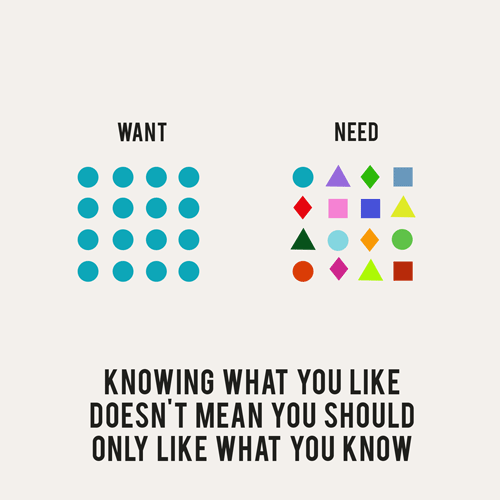

Sun, 05 Sep 2010 18:04:27 · Infographic · ErinHanson · good
'The Difference Between Wants and Needs' Visualized
Artist and Photographer, Erin Hanson, cleverly illustrate a comparisons between the things she thinks she wants and the things she actually needs. She wants ’Facebook time’ but needs to ’face a book’…

See the series of her works called “Need to Want Less" for a more augmented visualization.